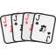
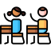
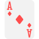

Простейшая вероятностная ситуация состоит в том, что случайно делается выбор из N вариантов, например, подбрасывается шестигранный кубик. Среди этих N вариантов есть M вариантов, которые мы ассоциируем как "успех".
В этом случае вероятностью события A, которое состоит в том, что будет успех, определяется по формуле:
\[P(A)=\frac{M}{N}\]
Пример: подбрасывается кубик, событие A состоит в том, что выпадет нечетное число. В этом случае N = 6, M = 3, вероятность:
\[P(A)=\frac{3}{6}=\frac{1}{2}\]
Бросайте кубик несколько раз и отмечайте, сколько раз будет нечетное число.
Частота выпадания нечетных чисел: нет бросков
При большом числе бросков частота выпадания нечетных чисел будет стремиться к 0.5.

Из колоды 36 карт наугад выбирают одну карту. С какой вероятностью это будет валет?
Всего возможных вариантов выбора одной карты из колоды - 36, поэтому число N = 36. Вариантов "успеха" всего 4 (столько вальтов в колоде), поэтому M = 4. Следовательно, вероятность выбрать вальта равна:
\[P(A)=\frac{M}{N}=\frac{4}{36}=\frac{1}{9}.\]

В классе учатся 25 школьников. Из них 15 девочек и 10 мальчиков. С какой вероятностью случайно выбранный ученик будет мальчиком?
Всего возможных вариантов выбора одного ученика - 25, поэтому число N = 25. Вариантов "успеха" всего 10 (столько мальчиков в классе), поэтому M = 10. Следовательно, вероятность выбрать мальчика равна:
\[P(A)=\frac{M}{N}=\frac{10}{25}=\frac{2}{5}.\]
Для решения более сложных задач нужны простейшие сведения из комбинаторики, которые мы сейчас с Вами рассмотрим.
В комбинаторных формулах мы будем использовать понятие факториала. Если Вы не уверены, что хорошо знаете, что такое факториал, то посмотрите наше объяснение:
Для решения задач по теории вероятностей очень часто нужно вычислить сколькими различными спососбами можно извлечь из множества, содержащего n объектов ровно k штук без учета последовательности выбираемых объектов.
Например, сколькими способами можно извлечь из колоды 36 карт 6 различных карт?
Это количество вычисляется по формуле:
\[C^k_n=\frac{n!}{k!(n-k)!}\]
Это число называется биноминальным коэффициентом или числом сочетаний.
Вычислим сколько существует различных раскладов 6 карт в игру "Дурак" из колоды 36 карт:
\[C^6_{36}=\frac{36!}{6!(36-6)!}= \frac{31\cdot32\cdot33\cdot34\cdot35\cdot36}{720}=1 947 792.\]
Поэтому можно утверждать, что у Вас еще ни разу не было одинаковой начальной раскладки 6 карт.
Если при выборе k объектов из n объектов нам важен порядок, то говорят о размещении k объектов. Число размещений вычислется по формуле:
\[A^k_n=\frac{n!}{(n-k)!}.\]
Если у нас есть n объектов, и нас интересует количество возможных перестановок этих объектов, то это количество вычислется по формуле:
\[P_n=n!\]
Факторал от целого неотрицательного числа n вычисляется по следующей формуле:
\[n!=1\cdot2\cdot3\cdot\dots\cdot(n-1)\cdot n.\]
Вот, пример:
\[5!=1\cdot2\cdot3\cdot4\cdot5=120.\]
По определению считают: 0! = 1.
Заметим, что с увеличением n значение факториала растет очень быстро. Например 70! будет больше чем единица и сто нулей (10100).
Из колоды 36 карт наугад выбирают 6 карт. С какой вероятностью в этом наборе будет две "дамы"?
Всего вариантов выбрать 6 карт из 36 равно:
\[C^6_{36}=1947792.\]
Вариантов выбать 2 дамы (из 4 дам):
\[C^2_4=6.\]
А еще 4 карты из "не дам". Карт, не являющихся дамами, ровно 32. Поэтому:
\[C^4_{32}=35960\]
В итоге получаем следующую вероятность:
\[P(A)=\frac{C^2_4\cdot C^4_{32}}{C^6_{36}}\approx0.1108.\]

Из колоды 36 карт наугад выбирают 6 карт. С какой вероятностью в этом наборе будет хотя бы один туз?
При решении задач на "хотя бы один" следует использовать свойство, что сумма вероятностей противоположных событий равна 1.
Поэтому сначала найдем вероятность того, что при раскладке 6 карт из 36 у нас не будет ни одного туза.
Всего вариантов выбрать 6 карт из 36 равно:
\[C^6_{36}=1947792.\]
Вариантов выбать 6 карт без тузов - это выбрать 6 из 32 (количество не-тузов):
\[C^6_{32}=906192.\]
Тогда вероятность события B, состоящего в том, что не будет ни одного туза, равна
\[P(B)=\frac{C^6_{32}}{C^6_{36}}\approx0.4653.\]
В итоге вероятность, что будет хотя бы один туз равна
\[P(A)=1-P(B)\approx0.5347.\]